Investigate_sparsity_ebpm
zihao12
2019-11-01
Last updated: 2019-11-03
Checks: 7 0
Knit directory: ebpmf_demo/
This reproducible R Markdown analysis was created with workflowr (version 1.4.0). The Checks tab describes the reproducibility checks that were applied when the results were created. The Past versions tab lists the development history.
Great! Since the R Markdown file has been committed to the Git repository, you know the exact version of the code that produced these results.
Great job! The global environment was empty. Objects defined in the global environment can affect the analysis in your R Markdown file in unknown ways. For reproduciblity it’s best to always run the code in an empty environment.
The command set.seed(20190923) was run prior to running the code in the R Markdown file. Setting a seed ensures that any results that rely on randomness, e.g. subsampling or permutations, are reproducible.
Great job! Recording the operating system, R version, and package versions is critical for reproducibility.
Nice! There were no cached chunks for this analysis, so you can be confident that you successfully produced the results during this run.
Great job! Using relative paths to the files within your workflowr project makes it easier to run your code on other machines.
Great! You are using Git for version control. Tracking code development and connecting the code version to the results is critical for reproducibility. The version displayed above was the version of the Git repository at the time these results were generated.
Note that you need to be careful to ensure that all relevant files for the analysis have been committed to Git prior to generating the results (you can use wflow_publish or wflow_git_commit). workflowr only checks the R Markdown file, but you know if there are other scripts or data files that it depends on. Below is the status of the Git repository when the results were generated:
Ignored files:
Ignored: .Rhistory
Ignored: .Rproj.user/
Untracked files:
Untracked: analysis/.ipynb_checkpoints/
Untracked: analysis/Experiment_ebpmf_simple.Rmd
Untracked: analysis/ebpmf_demo.Rmd
Untracked: analysis/ebpmf_rank1_demo2.Rmd
Untracked: analysis/softmax_experiments.ipynb
Untracked: code/misc.R
Untracked: data/Compare_ebpmf_nmf2_out
Untracked: data/Compare_ebpmf_nmf2_out_ver2.Rds
Untracked: data/trash/
Untracked: docs/figure/Experiment_ebpmf.Rmd/
Untracked: verbose_log_1571583163.21966.txt
Untracked: verbose_log_1571583324.71036.txt
Untracked: verbose_log_1571583741.94199.txt
Untracked: verbose_log_1571588102.40356.txt
Unstaged changes:
Modified: analysis/Compare_ebpmf_nmf.Rmd
Modified: analysis/Compare_ebvaepm_ebpm.Rmd
Modified: analysis/Experiment_ebpmf_rank1.Rmd
Modified: analysis/nmf_sparse.Rmd
Modified: analysis/softmax_experiments.Rmd
Modified: data/Compare_ebpmf_nmf2_out.Rds
Note that any generated files, e.g. HTML, png, CSS, etc., are not included in this status report because it is ok for generated content to have uncommitted changes.
These are the previous versions of the R Markdown and HTML files. If you’ve configured a remote Git repository (see ?wflow_git_remote), click on the hyperlinks in the table below to view them.
| File | Version | Author | Date | Message |
|---|---|---|---|---|
| Rmd | 38c76cc | zihao12 | 2019-11-03 | update Investigate_sparsity_ebpm.Rmd |
| html | 909490a | zihao12 | 2019-11-01 | Build site. |
| Rmd | 9ea12a5 | zihao12 | 2019-11-01 | Investigate_sparsity_ebpm.Rmd update |
| html | 261be04 | zihao12 | 2019-11-01 | Build site. |
| Rmd | d7b9d17 | zihao12 | 2019-11-01 | Investigate_sparsity_ebpm.Rmd update |
| html | 8540930 | zihao12 | 2019-11-01 | Build site. |
| Rmd | f1d09ca | zihao12 | 2019-11-01 | Investigate_sparsity_ebpm.Rmd update |
| html | 7f80b25 | zihao12 | 2019-11-01 | Build site. |
| Rmd | ad98afa | zihao12 | 2019-11-01 | Investigate_sparsity_ebpm.Rmd |
| html | 55dd5ad | zihao12 | 2019-11-01 | Build site. |
| Rmd | bae2e5d | zihao12 | 2019-11-01 | Investigate_sparsity_ebpm.Rmd |
| html | d6ca75d | zihao12 | 2019-11-01 | Build site. |
| Rmd | ea8db90 | zihao12 | 2019-11-01 | Investigate_sparsity_ebpm.Rmd |
Introduction
I first generate sparse \(\lambda_0\) and \(x_0\), and find
ebpm_point_gammafits data very well whileebpm_exponential_mixcannot model \(g\) well due to its unimodal shape. Ther posterior mean for the large nonzero elements are very different between the two models.Then I make \(\lambda\) not sparse by adding random small number (compared with original nonzero element) to \(\lambda_0\). Then the posterior mean becomes very similar between the two models and they get bad divergence between \(\lambda_{est}\) and \(\lambda_{true}\). This is because the point-zero of
ebpm_point_gammasimply does not work any more. Ideally we want huge mass at several small counts, not just 0.Finally, I add very small noise to the \(x_0\) so that it is real-valued and does not exactly get 0, as is the case we encounter in
ebpmf. The performance ofebpm_point_gammagets much worse compared to with \(x_0\) data. This is not surprising, as the point-mass at 0 becomes useless when the data is not exactly 0.
devtools::load_all("../ebpm")Loading ebpmlibrary(ebpm)
library(ggplot2)
source("code/misc.R")
KL <- function(true,est){
sum(ifelse(true==0,0,true * log(true/est)) + est - true)
}
JS <- function(true,est){
0.5*(KL(true, est) + KL(est, true))
}
RMSE <- function(true, est){
sqrt(mean((true - est)^2))
}sparse data
set.seed(123)
n = 99
lam = replicate(n, 0)
lam[1:(n/3)] = 50
x = rpois(n, lambda = lam)
hist(x, breaks = 100)
fit_ebpm_exp = ebpm::ebpm_exponential_mixture(x, m = 2^0.25)
fit_ebpm_pg = ebpm::ebpm_point_gamma(x)Warning in (function (f, p, ..., hessian = FALSE, typsize = rep(1,
length(p)), : NA/Inf replaced by maximum positive valuedf = data.frame(idx = 1:length(x),x = x, lam = lam, exp = fit_ebpm_exp$posterior$mean, pg = fit_ebpm_pg$posterior$mean)
KLs <- c(KL(lam, df$x), KL(lam, df$exp), KL(lam, df$pg))
JSs <- c(JS(lam, df$x),JS(lam, df$exp), JS(lam, df$pg))
RMSEs <- c(RMSE(lam, df$x), RMSE(lam, df$exp), RMSE(lam, df$pg))
data.frame(KL = KLs, JS = JSs, RMSE = RMSEs, row.names = c("mle", "ebpm_exp", "ebpmf_pg")) KL JS RMSE
mle 16.7619669 16.7880009 4.1487494
ebpm_exp 19.8776316 Inf 4.0690013
ebpmf_pg 0.1167793 0.1165746 0.3422549ggplot(df)+
geom_point(aes(x = x, y = exp, color = "ebpm_exponential_mixture"))+
geom_point(aes(x = x, y = pg, color = "ebpm_point_gamma"))+
geom_abline(slope = 1, intercept = 0)+
ylab("posterior mean")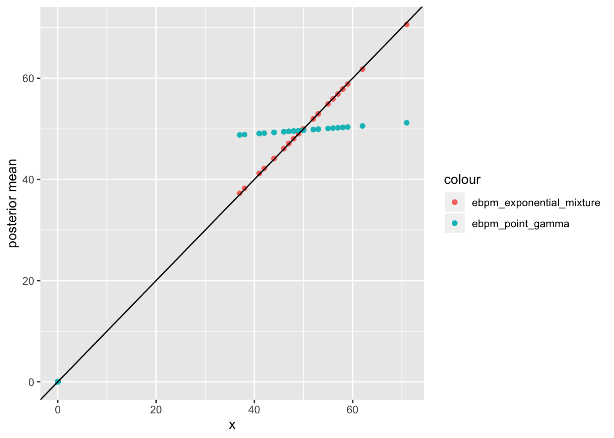
| Version | Author | Date |
|---|---|---|
| 55dd5ad | zihao12 | 2019-11-01 |
The \(0\) are fitted with:
min(df$exp)[1] 0.05719759min(df$pg)[1] 0Let’s take a closer look at those large elements
df_large = df[1:(n/3),]
ggplot(df_large)+
geom_point(aes(x = x, y = exp, color = "ebpm_exponential_mixture"))+
geom_point(aes(x = x, y = pg, color = "ebpm_point_gamma"))+
geom_abline(slope = 1, intercept = 0)+
ylab("posterior mean")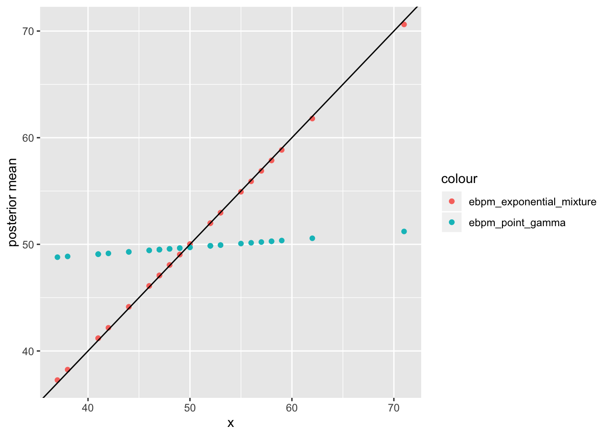
look at \(\hat{g}\)
m = 1000
point_df = data.frame(samples = sample_point_gamma(m, fit_ebpm_pg$fitted_g), method = "point_gamma")
exp_df = data.frame(samples = sample_expmix(m, fit_ebpm_exp$fitted_g), method = "exponential_mixture")
samples_df = rbind(point_df, exp_df)
ggplot(samples_df, aes(samples, fill = method)) + geom_density(alpha = 0.2)+ggtitle("compare g_hat")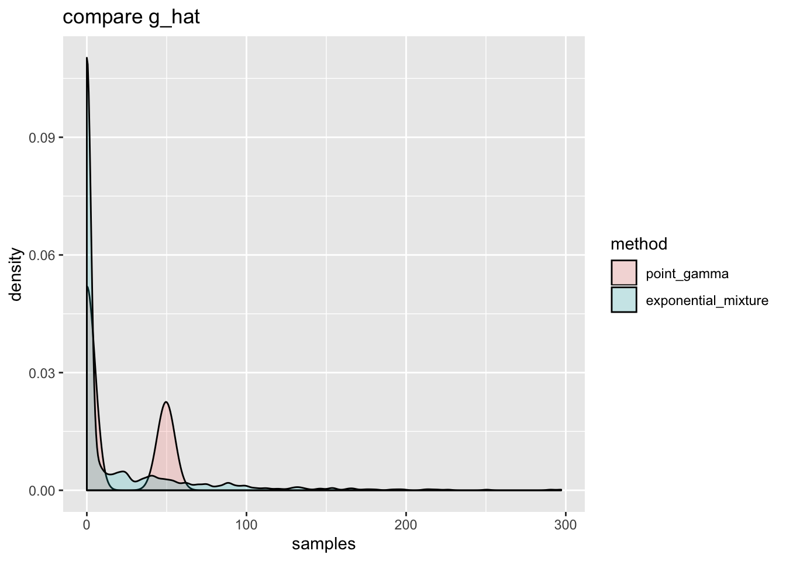
fit_ebpm_pg$fitted_g$pi0
[1] 0.6666667
$shape
[1] 650.7587
$scale
[1] 0.0763674
attr(,"class")
[1] "point_gamma"
attr(,"row.names")
[1] 1So in this example, ebpm_point_gamma estimates a \(\hat{g}\) that’s much closer to the truth than ebpm_exponential_mixture, because the latter is unimodal at 0 so cannot capture the second mode at 50. ebpm_point_gamma can distinguish between \(0\) and some larger counts centered around 50 fairly well.
not exactly sparse
replace 0 with small values in data.
df_org = df
set.seed(123)
mfac = 2 # controls PVE of dense factor
lam[-(1:(n/3))] = mfac*runif(n * 2/3)
x = rpois(n, lambda = lam)
hist(x, breaks = 100)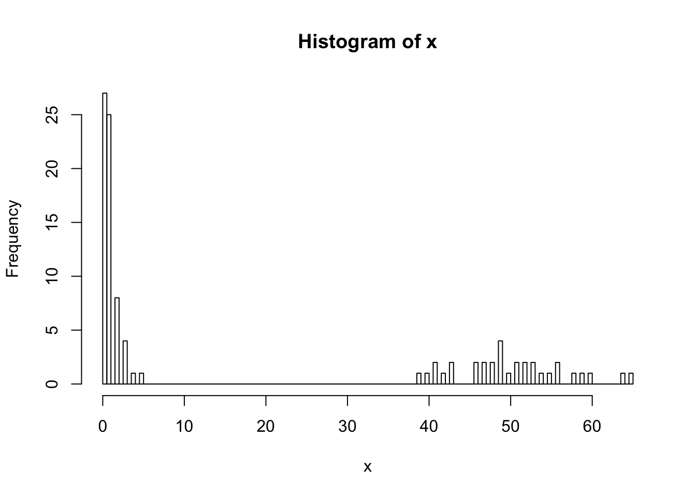
fit_ebpm_exp = ebpm::ebpm_exponential_mixture(x, m = 2^0.25)
fit_ebpm_pg = ebpm::ebpm_point_gamma(x)
df = data.frame(idx = 1:length(x),x = x, lam = lam, exp = fit_ebpm_exp$posterior$mean, pg = fit_ebpm_pg$posterior$mean)
KLs <- c(KL(lam, df$x), KL(lam, df$exp), KL(lam, df$pg))
JSs <- c(JS(lam, df$x),JS(lam, df$exp), JS(lam, df$pg))
RMSEs <- c(RMSE(lam, df$x), RMSE(lam, df$exp), RMSE(lam, df$pg))
data.frame(KL = KLs, JS = JSs, RMSE = RMSEs, row.names = c("mle", "ebpm_exp", "ebpmf_pg")) KL JS RMSE
mle Inf Inf 3.842117
ebpm_exp 23.48976 23.92649 3.724782
ebpmf_pg 30.85361 31.18642 3.788555ggplot(df)+
geom_point(aes(x = x, y = exp, color = "ebpm_exponential_mixture"))+
geom_point(aes(x = x, y = pg, color = "ebpm_point_gamma"))+
geom_abline(slope = 1, intercept = 0)+
ylab("posterior mean")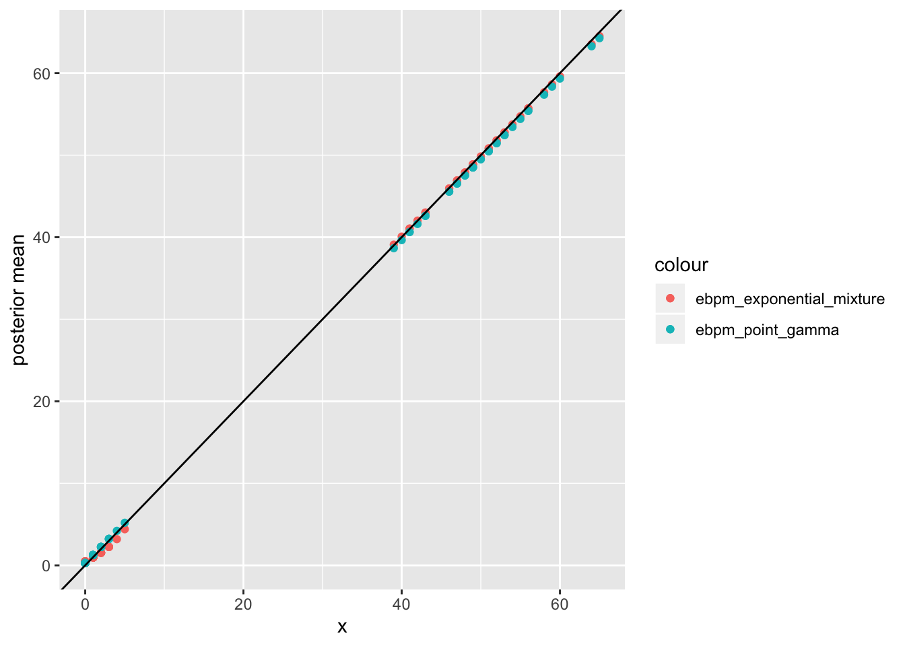
| Version | Author | Date |
|---|---|---|
| 8540930 | zihao12 | 2019-11-01 |
min(df$x)[1] 0min(df$exp)[1] 0.4694629min(df$pg)[1] 0.2702189Let’s take a closer look at those small elements
df_small = df[-(1:(n/3)),]
ggplot(df_small)+
geom_point(aes(x = x, y = exp, color = "ebpm_exponential_mixture"))+
geom_point(aes(x = x, y = pg, color = "ebpm_point_gamma"))+
geom_abline(slope = 1, intercept = 0)+
ylab("posterior mean")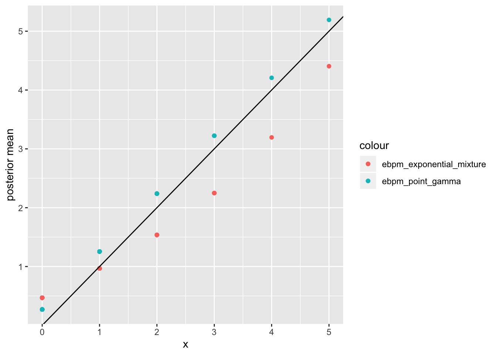
Let’s take a closer look at those large elements
df_large = df[1:(n/3),]
ggplot(df_large)+
geom_point(aes(x = x, y = exp, color = "ebpm_exponential_mixture"))+
geom_point(aes(x = x, y = pg, color = "ebpm_point_gamma"))+
geom_abline(slope = 1, intercept = 0)+
ylab("posterior mean")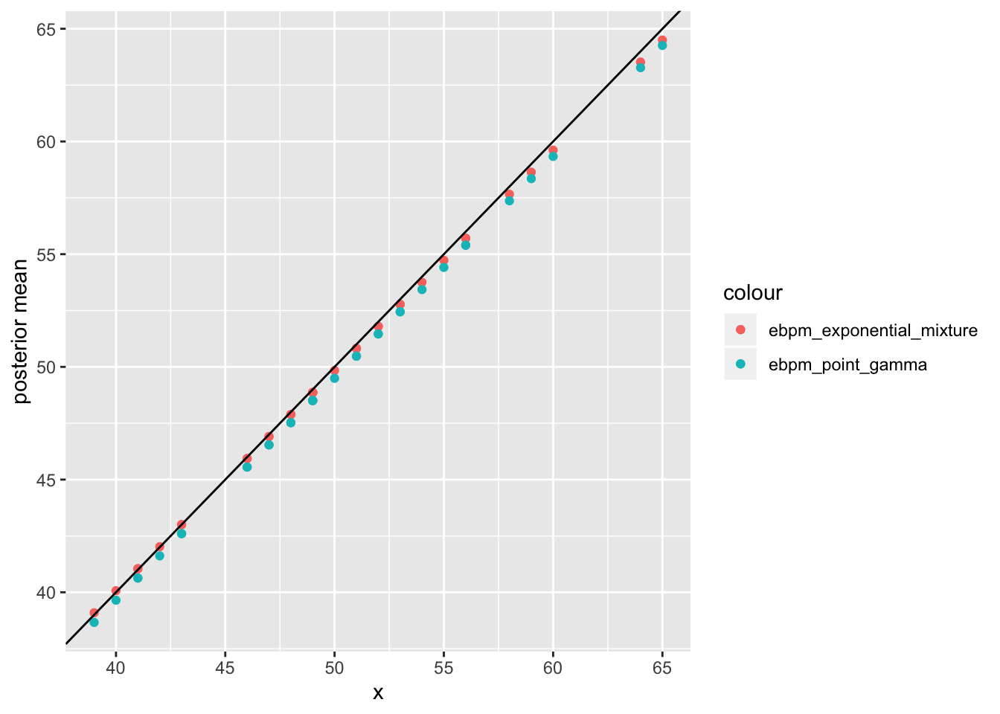
look at \(\hat{g}\)
m = 1000
point_df = data.frame(samples = sample_point_gamma(m, fit_ebpm_pg$fitted_g), method = "point_gamma")
exp_df = data.frame(samples = sample_expmix(m, fit_ebpm_exp$fitted_g), method = "exponential_mixture")
samples_df = rbind(point_df, exp_df)
ggplot(samples_df, aes(samples, fill = method)) + geom_density(alpha = 0.2)+ggtitle("compare g_hat")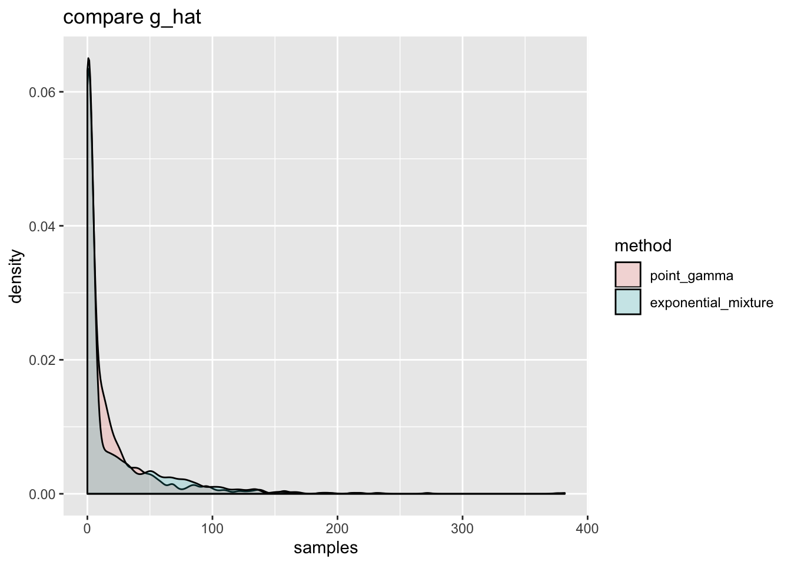
| Version | Author | Date |
|---|---|---|
| 261be04 | zihao12 | 2019-11-01 |
fit_ebpm_pg$fitted_g$pi0
[1] 1.705507e-07
$shape
[1] 0.2744924
$scale
[1] 63.23373
attr(,"class")
[1] "point_gamma"
attr(,"row.names")
[1] 1Here ebpm_point_gamma fails to capture the two modes. The much less sparisity makes \(\pi_0\) much smaller. So the \(gamma(shape, scale)\) has to compromise between large counts and very small counts. In this scenario, the point mass assumption does not work!!
Real-valued Data
I add some small perturbation to the data \(x\) in previous section to make it real valued. (red is original count; blue is the real-valued “count”)
set.seed(123)
noise = 0.00000002
x = df_org$x + noise*runif(n)
lam = df_org$lam
hist(df_org$x, col = "red", xlab = "data", breaks = 100, main = "original count and real-valued `count`")
hist(x, col = "blue", add = T, breaks = 100)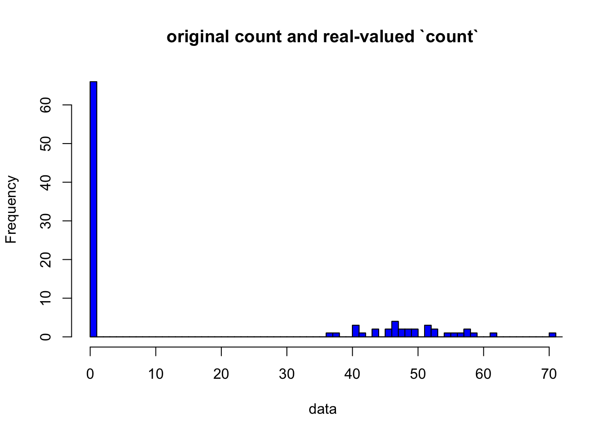
| Version | Author | Date |
|---|---|---|
| 261be04 | zihao12 | 2019-11-01 |
fit_ebpm_exp = ebpm::ebpm_exponential_mixture(x, m = 2^0.25)
fit_ebpm_pg = ebpm::ebpm_point_gamma(x)
df = data.frame(idx = 1:length(x),x = x, exp = fit_ebpm_exp$posterior$mean, pg = fit_ebpm_pg$posterior$mean)
KLs <- c(KL(lam, df$x), KL(lam, df$exp), KL(lam, df$pg))
JSs <- c(JS(lam, df$x),JS(lam, df$exp), JS(lam, df$pg))
RMSEs <- c(RMSE(lam, df$x), RMSE(lam, df$exp), RMSE(lam, df$pg))
## Although the original true lambda is not exactly the original lambda, but since the noise is so small, I just use original true lambda
data.frame(KL = KLs, JS = JSs, RMSE = RMSEs, row.names = c("mle", "ebpm_exp", "ebpmf_pg")) KL JS RMSE
mle 16.76197 Inf 4.148749
ebpm_exp 16.71846 Inf 4.069926
ebpmf_pg 22.50063 Inf 4.133063ggplot(df)+
geom_point(aes(x = x, y = exp, color = "ebpm_exponential_mixture"))+
geom_point(aes(x = x, y = pg, color = "ebpm_point_gamma"))+
geom_abline(slope = 1, intercept = 0)+
ylab("posterior mean")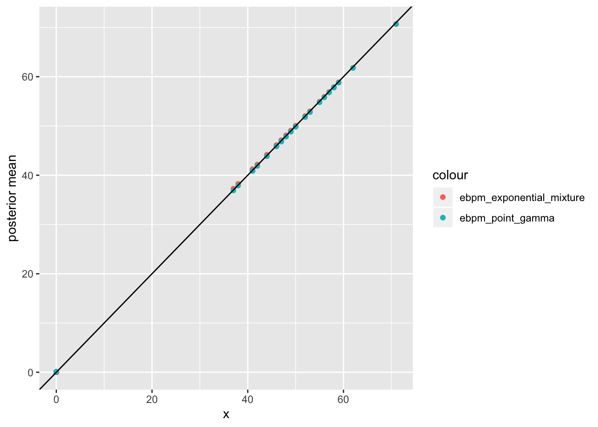
min(df$x)[1] 1.249547e-11min(df$exp)[1] 0.00938388min(df$pg)[1] 0.08715604Let’s take a closer look at those small elements
df_small = df[-(1:(n/3)),]
ggplot(df_small)+
geom_point(aes(x = x, y = exp, color = "ebpm_exponential_mixture"))+
geom_point(aes(x = x, y = pg, color = "ebpm_point_gamma"))+
geom_abline(slope = 1, intercept = 0)+
ylab("posterior mean")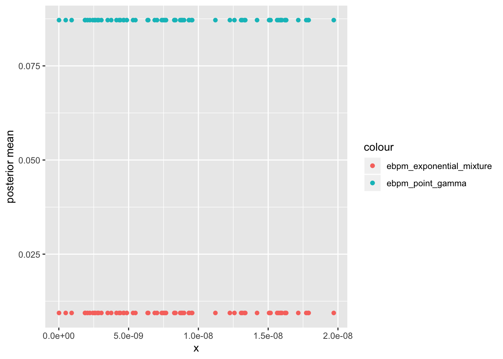
Let’s take a closer look at those large elements
df_large = df[1:(n/3),]
ggplot(df_large)+
geom_point(aes(x = x, y = exp, color = "ebpm_exponential_mixture"))+
geom_point(aes(x = x, y = pg, color = "ebpm_point_gamma"))+
geom_abline(slope = 1, intercept = 0)+
ylab("posterior mean")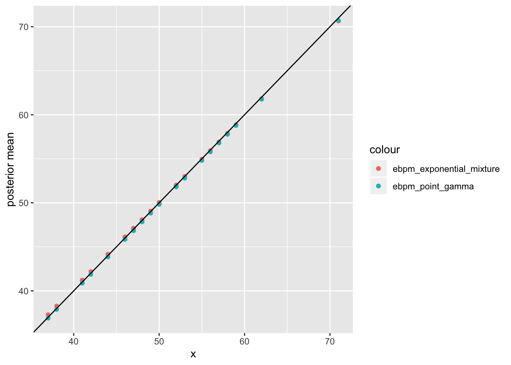
look at \(\hat{g}\)
m = 1000
point_df = data.frame(samples = sample_point_gamma(m, fit_ebpm_pg$fitted_g), method = "point_gamma")
exp_df = data.frame(samples = sample_expmix(m, fit_ebpm_exp$fitted_g), method = "exponential_mixture")
samples_df = rbind(point_df, exp_df)
ggplot(samples_df, aes(samples, fill = method)) + geom_density(alpha = 0.2)+ggtitle("compare g_hat")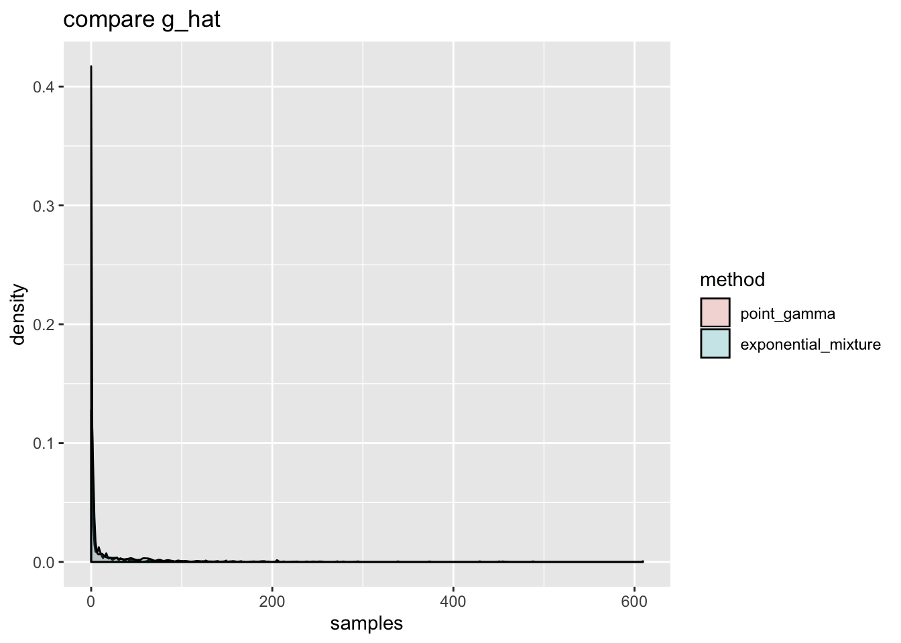
fit_ebpm_pg$fitted_g$pi0
[1] 0
$shape
[1] 0.087617
$scale
[1] 189.0729
attr(,"class")
[1] "point_gamma"
attr(,"row.names")
[1] 1The very small noise gets very different result for ebpm_point_gamma. Not surprising as the point-mass at 0 is not useful when data does not have exact 0s.
sessionInfo()R version 3.5.1 (2018-07-02)
Platform: x86_64-apple-darwin15.6.0 (64-bit)
Running under: macOS 10.14
Matrix products: default
BLAS: /Library/Frameworks/R.framework/Versions/3.5/Resources/lib/libRblas.0.dylib
LAPACK: /Library/Frameworks/R.framework/Versions/3.5/Resources/lib/libRlapack.dylib
locale:
[1] en_US.UTF-8/en_US.UTF-8/en_US.UTF-8/C/en_US.UTF-8/en_US.UTF-8
attached base packages:
[1] stats graphics grDevices utils datasets methods base
other attached packages:
[1] ggplot2_3.2.1 ebpm_0.0.0.9001 testthat_2.2.1
loaded via a namespace (and not attached):
[1] Rcpp_1.0.2 pillar_1.4.2 compiler_3.5.1
[4] git2r_0.25.2 workflowr_1.4.0 prettyunits_1.0.2
[7] remotes_2.1.0 tools_3.5.1 digest_0.6.22
[10] pkgbuild_1.0.3 pkgload_1.0.2 tibble_2.1.3
[13] gtable_0.3.0 evaluate_0.14 memoise_1.1.0
[16] pkgconfig_2.0.3 rlang_0.4.0 cli_1.1.0
[19] rstudioapi_0.10 yaml_2.2.0 xfun_0.8
[22] dplyr_0.8.1 withr_2.1.2 stringr_1.4.0
[25] knitr_1.25 gtools_3.8.1 desc_1.2.0
[28] fs_1.3.1 devtools_2.2.1.9000 tidyselect_0.2.5
[31] grid_3.5.1 rprojroot_1.3-2 glue_1.3.1
[34] R6_2.4.0 processx_3.3.1 rmarkdown_1.13
[37] sessioninfo_1.1.1 mixsqp_0.1-121 purrr_0.3.2
[40] callr_3.2.0 magrittr_1.5 whisker_0.3-2
[43] scales_1.0.0 backports_1.1.5 ps_1.3.0
[46] ellipsis_0.3.0 htmltools_0.3.6 usethis_1.5.1
[49] assertthat_0.2.1 colorspace_1.4-1 labeling_0.3
[52] stringi_1.4.3 lazyeval_0.2.2 munsell_0.5.0
[55] crayon_1.3.4